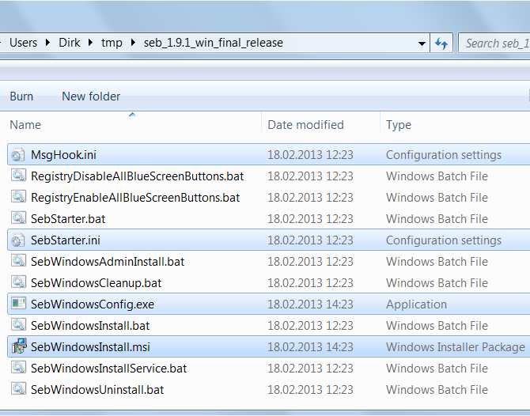

Quick Guide to SEB for Windows |
English Deutsch |
This document is a step by step tutorial that explains how to set up SEB for Windows and run secure online-exams in a learning management system (LMS).
Download the most recent SEB version from the download area as a zip file (e.g. seb_1.9.1_win.zip). Until version 1.4.1, the zip file contains the program files SebStarter.exe and MsgHook.dll for manual copying to the hard disk. From version 1.7, the zip file instead contains an msi file SebWindowsInstall.msi for the Microsoft Installer, which performs a real installation and automatically copies the program files to the right places.
From version 1.5, SEB for Windows requires the runtime environment Microsoft .NET, which is already installed on most Windows computers, but not always the newest version. For most SEB components, i.e. on the exam computers, the version .NET 3.5 is sufficient. It is automatically contained in the operating system for Windows 7, but not necessarily for Windows XP. The optional tool SebWindowsConfig.exe (see below) requires the newest version .NET 4.0 - but only on the computer where the teacher configures SEB.
Therefore check in the list of programs ("Contol Panel" -> "Add / Remove Programs" or "Programs" -> "Uninstall a Program") which .NET versions are already installed on your machine; they are named "Microsoft .NET Framework x.y". If the .NET 3.5 framework is still missing in the list, you can download and install it here:
http://www.microsoft.com/en-us/download/details.aspx?id=25150
You can download the framework .NET 4.0 here:
http://www.microsoft.com/en-us/download/details.aspx?id=17718
Unpack (in the role of the teacher) the downloaded zip file, e.g. seb_1.9.1_win.zip, to an arbitrary folder of your hard drive. IMPORTANT: Do not double-click the zip file, because this only displays its contained files rather than really extracting it. Instead, right click the zip file and select the option Extract All... in the opening context menu. This unpacks the zip file into a new directory seb_1.9.1_win/ . In the Explorer (File Manager), switch to this directory:

Configure SEB by modifying the files MsgHook.ini and SebStarter.ini. From Version 1.8, you can do that comfortably via mouse clicks using the delivered tool SebWindowsConfig.exe (provided that you have installed .NET 4.0 on your configuration computer). Most important is setting the starting page of your exam (http://...) in the category Online exam in the input field Exam URL, and defining the function keys for quitting SEB in the category Exit sequence. You can find more details about the configuration in the User Manual.
Alternatively (and in older versions), you can load the ini files into an arbitrary ASCII text editor (e.g. Notepad) and modify them there. The starting page of your exam (http://...) is located in the line ExamUrl=...or URL_EXAM=... of the file SebStarter.ini. The function keys for quitting SEB are defined in an encoded manner in the lines B1=..., B2=..., and B3=... of the file MsgHook.ini. You can find the exact encoding scheme in the User Manual. But when using the SebWindowsConfig.exe tool, you can directly check the function keys without having to deal with the encoding; the encoding happens automatically.
In order to admit further programs in SEB, you can additionally edit the file SebStarter.bat and enter the paths to the permitted applications there, for SEB can find these applications. Further options are documented in the User Manual.
As soon as you have adapted the configuration files to your needs, pack together a new zip file. In order to do this, mark the files
MsgHook.ini
SebStarter.ini
SebWindowsInstall.msi
of the directory using Ctrl key and left mouse key, press the right mouse button, select "Send to" > "Compressed (zipped) folder", and input e.g. SebWindowsInstall.zip as file name.
REMARK: If you want to admit additional programs in SEB, you eventually need the file SebStarter.bat. You must then pack this file into the zip file, too.
You can distribute the resulting zip file to your students (e.g. for exams on private notebooks) or by deployment via administrator services into a computer classroom. Please tell your students to keep the extracted zip File (Source Directory) on their hard disk even after installation (see Step 4).
From Version 1.7
Alternatively, a distribution via Administrative Install is also possible. You (the teacher) have to call the script SebWindowsAdminInstall.bat by right-click and "Run as administrator". This creates a so-called Source Image, i.e. a new subdirectory called SebWindowsAdminImage, and copies the three modified configuration files into this source image. You can then make this source image available on a network drive.
Until Version 1.4.1 (obsolete)
SEB does not necessarily need to be installed in the program folder (e.g. C:\Program Files). You can install it in an arbitary folder. In any case, you can create a shortcut to SEB on the Windows desktop by right-clicking on the ...\SEB\Seb.exe file and then choosing Send to > Desktop (create shortcut).
If you choose this (simple, but obsolete) SEB variant, you need no installer, but must waive the service SebWindowsService.exe (see below), which can deactivate important security-relevant options like the Task Manager, which is desirable for many online exams.
From Version 1.7
On the exam computers, the distributed SebWindowsInstall.zip file must be unpacked, or the source image must be downloaded, respectively. Afterwards, the actual installation can take place by double-click on the SebWindowsInstall.msi file. The installation process is simple and self-explanatory. After successful installation, the two subdirectories SebClient\ and SebWindowsService\ are residing in the installation directory, e.g. in
C:\Program Files (x86)\ETH Zurich\SEB Windows 1.9.1
At the end of the installation process, a shortcut to SEB on the Windows desktop is created. Furthermore, the service SebWindowsService.exe is automatically started in the background at the end of the installation.
IMPORTANT: For a later uninstallation of SEB, the current SEB version 1.9.0 requires that the Source Directory (= the directory unzipped from the SebWindowsInstall.zip file and containing the SebWindowsInstall.msi file and .ini files) must remain on the hard disk of the target machine and should not be moved or renamed. Otherwise, when uninstalling via Control Panel, the directory containing the .msi file cannot be found and the uninstallation might therefore fail. So the students should be instructed to keep the Source Directory on their hard disk even after installation.